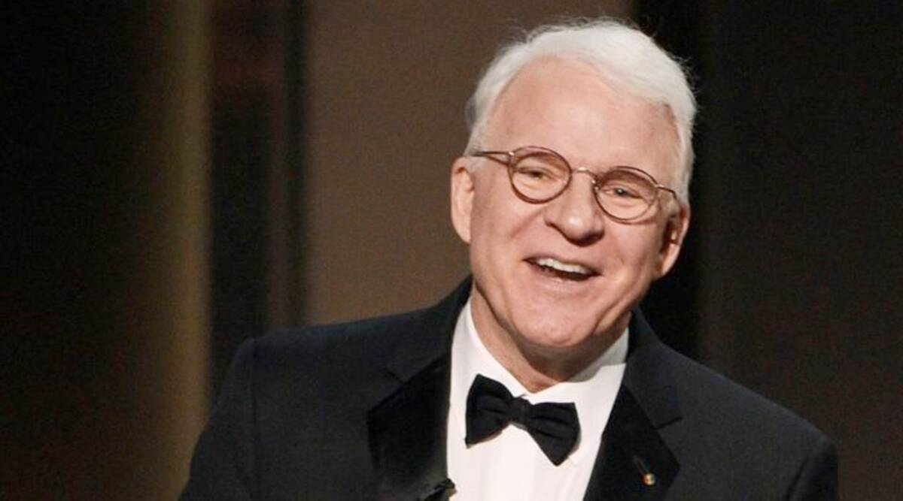
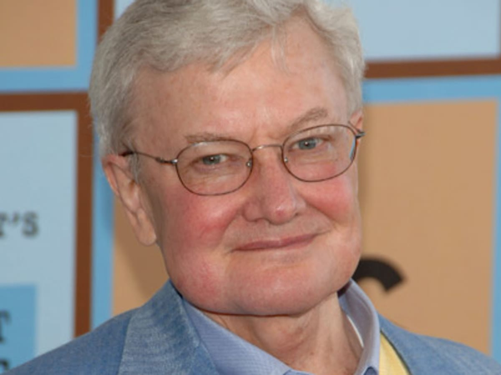
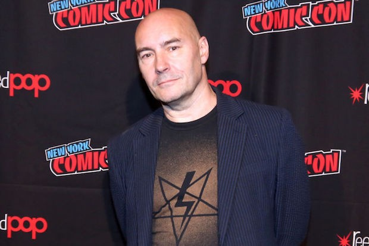
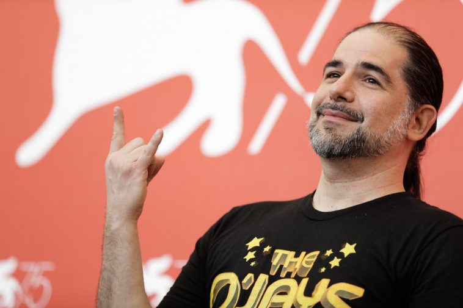
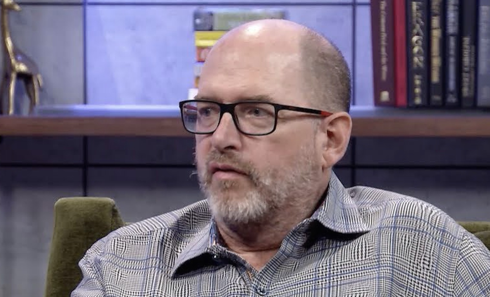
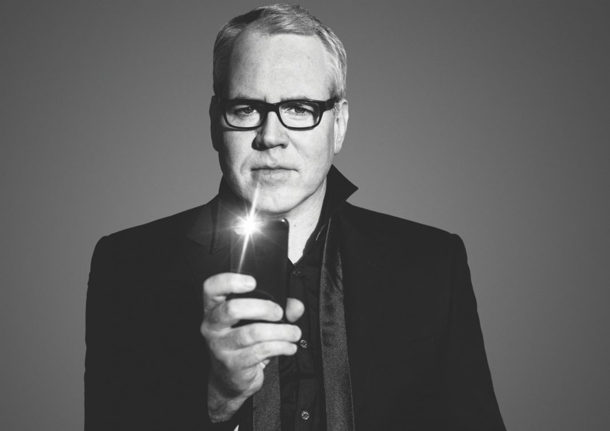
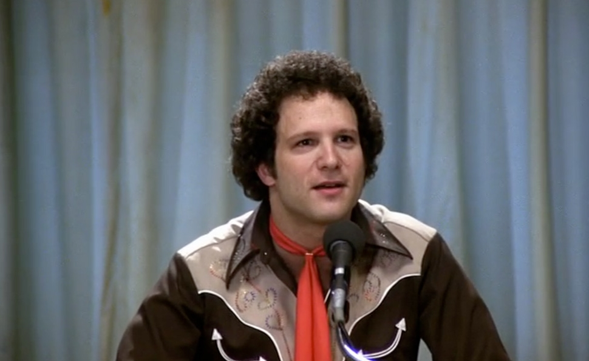
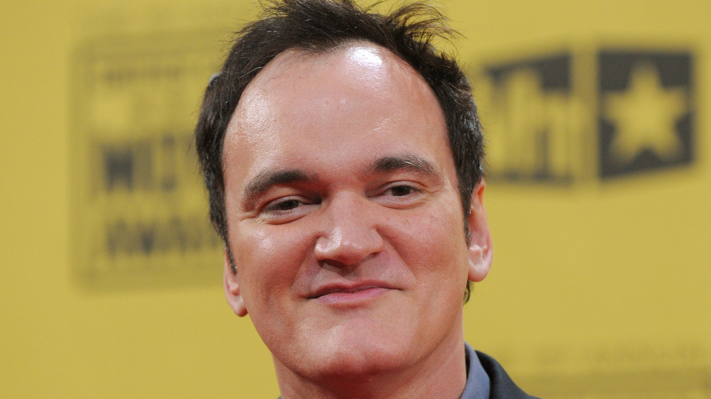

1. Jerry Stahl
Jerry Stahl is the best writer of his generation. He is best known for his sardonic wit, affinity for dark humor, frank observations on fringe lifestyles, satirical brilliance, and unlfinching honesty. His most renowned work is the addiction memoir, Permanent Midnight. He has also written such novels as Pev: A Love Story, Plainclothes Naked, and I, Fatty. Stahl is also a screenwriter, having most famously co-written Bad Boys 2 and written for such series as ALF and CSI: Crime Scene Invesigation.
2. Steve Martin
Steve Martin is not only one of the most popular comedic actors of all time, he's also an accomplished writer in several different mediums. Aside from collections of humorous short stories, plays, screenplays, and an autobiography, Martin has written a few short novels. Shopgirl, The Pleasure of My Company, and An Object of Beauty are all surprisingly thoughtful character studies from a man who first started his career as a Wild and Crazy Guy.
3. Roger Ebert
Roger Ebert is, arguably, the most influential and respected film critic of his time. No one has come close to possessing his intergrity, passion, and knowledge since he passed. He respected the films he reviewed, and his reviews were as thoughtful as they were singularly opinionated. There is no other film critic working today who can match the talents or the heart of Roger Ebert.
4. Grant Morrison
Grant Morrison is one of the most audacious talents that the comic book industry has ever seen. He takes familiar superhero characters (Batman, Superman, etc) and explores them with a unique point of view that incorporates metaphysics, surrealism, and a variety of philosophical viewpoints. Morrison's highly renowned original comic, The Invisibles, was an enormous influence on the classic Matrix films.
5. S. Craig Zahler
In a very short period of time, S. Craig Zahler has written several books and screenplays, regularly performed in his heavy metal band, Realmbuilder, drawn and written his own comic book, and has directed three great movies, Bone Tomahawk, Brawl in Cell Block 99, and Dragged Across Concrete. His work ethic is unstoppable, his talents are immeasurable, and his style impressively bends to the demands of each of his individual projects.
6. Daniel Waters
Daniel Waters is one of the wittiest, most bitingly satirical, and most intelligently off-kilter screenwriters working in Hollywood today. He has independent tastes, but has used them to create highly unique and individulistic works in the mainstream. Waters is best-known for writing the teenage dark comedy classic, Heathers. Significantly, he also wrote Batman Returns and Demolition Man in the early 90s.
7. Caroline Thompson
Caroline Thompson started her career with the darkly comedic novel, First Born, which is about an abortion that comes back to life. She is best-known as a screenwriter for her collaborations with director/producer Tim Burton, Edward Scissorhands, The Nightmare Before Christmas, and Corpse Bride. Her uniquely idiosynchratic tastes make her one of the most original and memorable screenwriters of her generation.
8. Bret Easton Ellis
Bret Easton Ellis' novels read like a strange cross between a Vogue magazine article and a David Lynch film. Ellis is a satirist who targets American materialism and the country's flood of dsyfunctional familial relationships. His work is often unforgettalbe, sometimes graphically violent, and always emotionally raw and honest. Ellis unfortunately hasn't written a novel in quite some time, as he has been more focused recently on his podcast and on writing screenplays.
9. Albert Brooks
Albert Brooks is reponsible for writing, directing, and acting in some of the most insightful, honest, and downright funny comedies of his time. Modern Romance, Lost in America, and Defending Your Life are just a few examples of Brooks' observational, character-driven, and neuroses-fueled brand of comedy. Though his films have never been huge mainstream hits (he is perhaps best known for displaying his vocal talents in Finding Nemo), Brooks' filmmaking efforts will be appreciated by his substantial and loyal fanbase for many years to come.
10. Quentin Tarantino
It's easy to hate Quentin Tarantino. He's too arrogant, too famous, and far too successful to be as good as everyone says/thinks he is. That being said, Tarantino's talent is impossible to ignore. While most of his later work doesn't match the fireworks display of his early work, it is impossible to deny that the man who created Reservoir Dogs, Pulp Fiction, True Romance, and Natural Born Killers possesses one of the most gifted and brazen voices of his time.